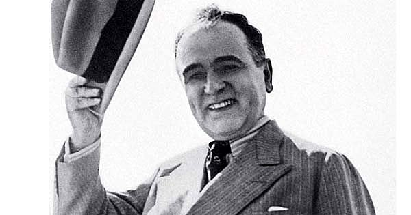

Getúlio Dornelles Vargas foi um advogado, político e presidente do Brasil nascido na cidade de São Borja (RS), no dia 19 de abril de 1882 e falecido em 24 de agosto de 1954. Vargas fez sua carreira política no Rio Grande do Sul e alcançou a presidência da República em 1930. Foi o presidente que mais tempo ficou no cargo em toda história republicana do Brasil.

Na década de 1920, o Brasil vivia a chamada política do café-com-leite. O poder era repartido entre os grandes proprietários de terras e políticos de São Paulo e Minas Gerais, estados que se alternavam na presidência. Por isso, Vargas sabia que tinha poucas chances de vencer a eleição quando foi candidato à presidência da República em 1930. Quando seu vice, João Pessoa, foi assassinado, liderou um golpe contra o poderio daqueles estados. Portanto, Vargas encabeçou a Revolução de 1930, na qual depôs Washington Luís (1869-1957) e rompeu o ciclo de alternância política entre as oligarquias mineira e cafeeira. Desta maneira, conquistou a presidência e ali permaneceu de 1930 a 1945
Governo Provisório (1930-1934) O governo provisório de Getúlio Vargas foi marcado pela instabilidade política, pois ele dava sinais que não convocaria eleições para presidente da República. O presidente tenta se articular com vários setores da sociedade como a Igreja e o sinal mais visível desta aproximação é a inauguração do Cristo Redentor, no Rio de Janeiro, em 12 de outubro de 1931. Também conquista o apoio feminino aprovando, em 1932, o voto feminino, mas se afasta das ideias mais progressistas. Igualmente, Vargas criou o Ministério da Educação e Saúde Pública, com o objetivo de implementar propostas tanto na área do ensino quanto da saúde. No âmbito trabalhista, ele estabelece a unicidade sindical, submetendo seu reconhecimento ao governo, enquanto investe nas indústrias como forma de gerar empregos. No campo político, Vargas substituiu os antigos governadores estaduais por interventores, que eram os tenentes que haviam participado da Revolução de 30. Insatisfeitos com essa medida arbitrária tomada pelo mandatário, bem como pela ausência de uma Constituição em vigência, o estado de São Paulo decide pegar em armas, no episódio conhecido como Revolução de 1932. Após a vitória de Getúlio, o presidente convoca eleições legislativas que o confirmam no cargo e promulgam a Constituição de 1934. Governo Constitucional: A promulgação da Constituição de 1934 não trouxe estabilidade ao governo. Inicia-se a repressão política aos partidos de esquerda, é instituída a polícia política e o presidente não dava snais de querer sair do poder. Os comunistas se rebelam e são derrotados em 1935, enquanto o governo usa o fato como pretexto para concentrar ainda mais poder. É importante lembrar que o mundo vivia uma polarização política muito grande entre as ideologias do fascismo e do socialismo.
Com a justificativa que o Brasil estava ameaçado pelo comunismo, Vargas fechou o Congresso e declarou-se presidente do Brasil. Em seguida, outorgou a Constituição de 1937, onde concentrava ainda mais poderes na figura do Poder Executivo. Declarou extinto os partidos políticos e passou a governar com grandes poderes. Em suma, o Estado Novo foi um período ditatorial liderado por Getúlio Vargas, inspirado diretamente nos governos fascistas europeus. Economia no governo de Getúlio Vargas Durante seu governo, caracterizado pelo nacionalismo e o populismo, Vargas instaurou uma doutrina econômica de interferência estatal sobre a economia. Nela, o Estado era o principal investidor e impulsor da economia nacional. Assim, por meio da aplicação de fundos para a criação de infraestrutura industrial, impulsionou principalmente estatais, mas também aquelas de capital privado. Além disso, estabeleceu mecanismos sociais com a Consolidação das Leis do Trabalho, sistematizando uma série de direitos trabalhistas como o salário mínimo e férias pagas aos trabalhadores urbanos. É preciso ressaltar que os trabalhadores rurais não foram beneficiados com essas leis. Em 1938, Vargas criou o IBGE (Instituto Brasileiro de Geografia e Estatística), a Companhia Siderúrgica Nacional, em 1941, a Vale do Rio Doce, em 1942, e a Hidrelétrica do Vale do São Francisco, em 1945. Relações Exteriores no governo de Getúlio Vargas As relações exteriores se caracterizam pela aproximação dos Estados Unidos e o progressivo afastamento dos países do Eixo, como Alemanha e Itália. Este fato culminaria na declaração e entrada do Brasil na Segunda Guerra Mundial. Igualmente, previa a utilização, por parte dos americanos, do uso de uma base aérea em Natal/RN. Nesse contexto, o governo brasileiro enviou soldados da Força Expedicionária Brasileira para combater as forças do Eixo na Europa. Fim do Estado Novo e queda de Vargas partir da declaração de guerra ao Eixo, as contradições do governo Vargas se tornaram mais explícitas. Várias associações civis e políticas passaram a contestar o modelo político do presidente e questioná-lo abertamente. Foi publicado o Manifesto dos Mineiros, onde se pedia abertamente a realização de eleições e o mesmo foi pedido durante o I Congresso Brasileiros de Escritores. Diante desse quadro, Vargas promulga o Código Eleitoral que permitia a criação de partidos políticos e marca as eleições para presidente para 2 de dezembro de 1945. Os militares também se articulam e passam a conspirar contra o mandatário, especialmente os generais Goés Monteiro (1889-1956), candidato pela UDN, e Eurico Dutra (1883-1974), candidato pelo PSD. As suspeitas de que Getúlio Vargas tentava permanecer no poder se agravaram quando o então presidente nomeou seu irmão para chefe da Polícia do Distrito Federal. Dizia-se que Benjamim Vargas (1887-1973) iria prender todos os generais contrários ao presidente. Diante disso, os militares depõem Vargas, que renuncia sem resistência e se retira para sua cidade natal, São Borja. Contudo, não ficaria ali por muito tempo, pois seria eleito senador no ano seguinte. Getúlio Vargas eleito Presidente (1950-1954) Em 1950, o governo de Eurico Gaspar Dutra chegava ao fim. Entre os candidatos à sucessão, se apresentou o ex-presidente Getúlio Vargas, que era candidato pelo PTB (Partido Trabalhista Brasileiro). A vitória foi bastante expressiva, mas os tempos haviam mudado. Agora, o mundo vivia a polarização da Guerra Fria e a política estava bem divida em quem apoiava os Estados Unidos e a União Soviética. Vargas impulsionou uma política nacionalista que incluía a criação de estatais como a Petrobras, porém não conseguiu repetir as mesmas amplas alianças e períodos de estabilidade da gestão anterior. Em 5 de agosto de 1954, um dos principais opositores de Getúlio Vargas, o jornalista Carlos Lacerda, sofreu um atentado próximo a sua casa, na rua Toneleros. Lacerda levaria um tiro e sobreviveria, mas seu guarda-costas, o militar Rubens Vaz, morreu no ato. Segue-se uma investigação onde se aponta o principal mentor do crime como Gregório Fortunato (1900-1962), chefe da guarda pessoal do presidente. A oposição, imediatamente, pedia a renúncia de Getúlio Vargas. Pressionado, Vargas declarou que só sairia do Catete morto, o que de fato aconteceu, quando se suicidou na cidade do Rio de Janeiro, no Palácio do Catete, em 24 de agosto de 1954. Sua atitude é entendida como uma estratégia drástica para evitar um golpe militar, que na época estava sendo discutido pelos chefes das Forças Armadas. Deixou uma carta-testamento onde explicava os motivos do seu gesto e afirmava: "Deixo a vida para entrar na História.". Curiosidades Apesar do passado ditatorial de Vargas, sua memória ainda é predominante associada à imagem de "pai dos pobres". Um dos filhos de Vargas, Manuel Sarmanho Vargas e um dos netos, chamado Getúlio Dornelles Vargas Neto, também cometeriam suicídio. O governo Vargas coincidiu com a "chanchada", um gênero de comédia popular, no qual se destacaram atores como Oscarito e Grande Otelo.